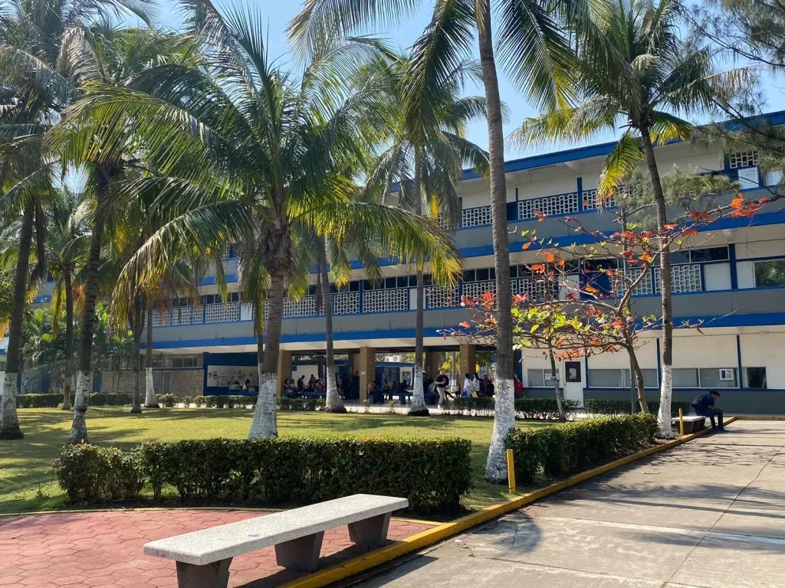
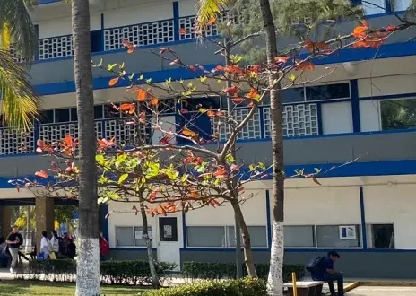
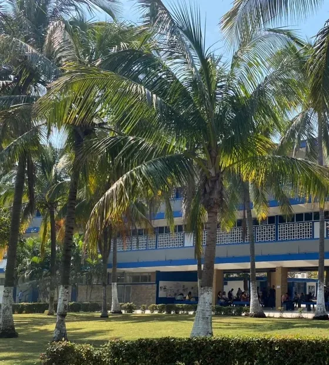

Del primer commit al despliegue: web, móvil y escritorio, con control de versiones y revisión de código.
En el capítulo: talleres de Git, desarrollo web y APIs; proyectos en equipo con revisiones semanales.
Azul IEEE · PMS 3015

Capítulo estudiantil de IEEE Computer Society en el Instituto Tecnológico de Veracruz: talleres, hackatones, conferencias y proyectos de computación.
Únete al capítulo


IEEE Computer Society nació en 1946 y en 2026 cumple 80 años. Su capítulo en el Tec de Veracruz reúne a quienes estudian computación y quieren aprender haciendo.
Cada área tecnológica del capítulo tiene un color de la paleta oficial de IEEE Computer Society. Elige una.
Del primer commit al despliegue: web, móvil y escritorio, con control de versiones y revisión de código.
En el capítulo: talleres de Git, desarrollo web y APIs; proyectos en equipo con revisiones semanales.
Azul IEEE · PMS 3015
Modelos que aprenden de datos: visión, lenguaje y aprendizaje automático aplicados a problemas reales.
En el capítulo: introducción al aprendizaje automático con Python y retos de clasificación con datos abiertos.
Naranja · PMS 137 C
Limpiar, analizar y visualizar datos para tomar decisiones con evidencia.
En el capítulo: análisis con pandas, visualización y un proyecto con datos públicos de Veracruz.
Cian · Process Cyan
Cómo se atacan y se defienden los sistemas: redes, criptografía y prácticas de desarrollo seguro.
En el capítulo: retos tipo captura de bandera y charlas sobre seguridad en redes universitarias.
Rojo · PMS 200 C
Infraestructura bajo demanda: contenedores, servicios administrados y arquitectura que escala.
En el capítulo: despliegue de aplicaciones con contenedores e introducción a servicios en la nube.
Turquesa · PMS 320 C
Requisitos, diseño, pruebas y calidad: el oficio de construir software que dura.
En el capítulo: pruebas automatizadas, diseño de arquitectura y metodologías de trabajo en equipo.
Verde · PMS 348 C
Lo que todavía no está en el temario: cómputo cuántico, internet de las cosas y realidad extendida.
En el capítulo: charlas exploratorias y prototipos con microcontroladores.
Amarillo · PMS 109 C
Sales con algo que funciona.
Sesiones con la computadora abierta en las que se aprende una herramienta concreta de principio a fin: Git, Python, bases de datos, despliegue en la nube.
Formato: práctica guiada · 2 a 4 horas
Gente que ya hace el trabajo.
Charlas de profesionales, investigadores y egresados sobre cómo se trabaja hoy en computación, con tiempo para preguntas, en el campus o en línea con otros capítulos IEEE.
Formato: charlas con invitados de la industria y la academia
Un reto real, un plazo corto.
Equipos pequeños construyen un prototipo que funcione y lo presentan ante un jurado. Se gana por lo que se demuestra, no por lo que se promete.
Formato: equipos · un reto · un fin de semana
24 horas de IEEEXtreme.
Entrenamiento en resolución de problemas y participación en concursos como IEEEXtreme, la competencia de programación de 24 horas que IEEE organiza para sus miembros estudiantes en todo el mundo.
Formato: programación competitiva, individual o en equipo
Un semestre, un proyecto.
Equipos que trabajan en un proyecto propio con revisiones entre pares y una presentación final abierta a la comunidad del Tec.
Formato: equipos · un semestre
Más grande que el campus.
Actividades con otros capítulos y ramas estudiantiles de IEEE, con la comunidad del ITVER y con empresas de la región que quieran proponer retos o impartir talleres.
Formato: con otros capítulos IEEE y empresas de la región
Calendario por publicar. Estos son ejemplos del formato que tendrá cada actividad.
El capítulo es para quienes estudian en el Instituto Tecnológico de Veracruz y quieren aprender computación fuera del aula. Aquí encuentras networking con estudiantes de otros semestres, egresados y profesionales; colaboración en equipos que construyen cosas reales, y crecimiento profesional y académico con talleres, competencias y experiencia de liderazgo en la mesa directiva. Afiliarte a IEEE te conecta con una red que existe desde 1946, con conferencias, publicaciones y competencias como IEEEXtreme. No necesitas experiencia previa. Empieza este semestre.
Mándanos un correo o ven a una actividad abierta del capítulo.
Elige un área, entra a un equipo y presenta tu proyecto al final del semestre.